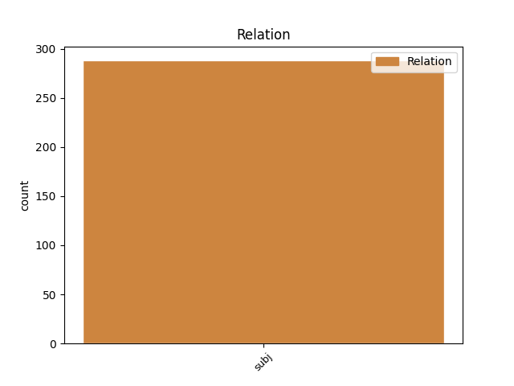
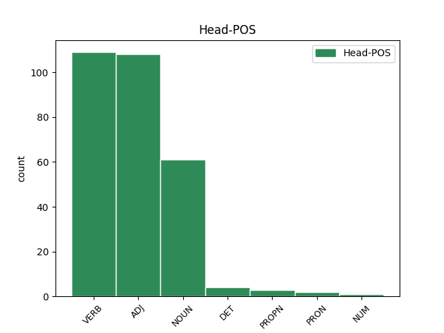
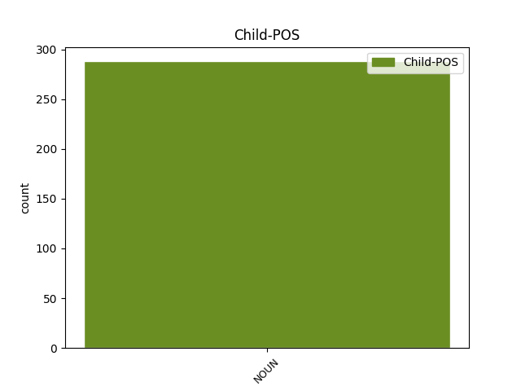

Distribution of features within this leaf



Agreement Rules sorted by frequency.
- When the dependent token is the subject(subj) of the head token, and the dependent token is NOUN.
1 21 _ _ _ _ 0 _ _ _
2 . _ _ _ _ 0 _ _ _
3 Komiteto _ _ _ _ 0 _ _ _
4 sprendimai _ _ _ _ 0 _ _ _
5 įforminami _ _ _ _ 0 _ _ _
6 posėdžių _ _ _ _ 0 _ _ _
7 protokolais _ _ _ _ 0 _ _ _
8 , _ _ _ _ 0 _ _ _
9 kuriuos _ _ _ _ 0 _ _ _
10 pasirašo _ _ _ _ 0 _ _ _
11 Komiteto _ _ _ _ 0 _ _ _
12 pirmininkas pirmininkas NOUN dkt.vyr.vns.V. Case=Nom|Gender=Masc|Number=Sing 0 _ _ _
13 ( _ _ _ _ 0 _ _ _
14 ar _ _ _ _ 0 _ _ _
15 pavaduotojas pavaduotojas NOUN dkt.vyr.vns.V. Case=Nom|Gender=Masc|Number=Sing 12 subj _ SpaceAfter=No
16 ) _ _ _ _ 0 _ _ _
17 ir _ _ _ _ 0 _ _ _
18 sekretorius _ _ _ _ 0 _ _ _
19 . _ _ _ _ 0 _ _ _
Disagree Examples:
1 Dalis dalis NOUN dkt.mot.vns.V. Case=Nom|Gender=Fem|Number=Sing 6 subj _ _
2 požiūrių _ _ _ _ 0 _ _ _
3 mums _ _ _ _ 0 _ _ _
4 yra _ _ _ _ 0 _ _ _
5 sunkiai _ _ _ _ 0 _ _ _
6 priimtini priimtinas ADJ bdv.nelygin.vyr.dgs.V. Case=Nom|Definite=Ind|Degree=Pos|Gender=Masc|Number=Plur 0 _ _ _
7 ir _ _ _ _ 0 _ _ _
8 per _ _ _ _ 0 _ _ _
9 mažai _ _ _ _ 0 _ _ _
10 argumentuoti _ _ _ _ 0 _ _ _
11 . _ _ _ _ 0 _ _ _
1 Šiuolaikinės _ _ _ _ 0 _ _ _
2 lietuviškosios _ _ _ _ 0 _ _ _
3 emigracijos _ _ _ _ 0 _ _ _
4 mastai _ _ _ _ 0 _ _ _
5 kelia _ _ _ _ 0 _ _ _
6 valstybės _ _ _ _ 0 _ _ _
7 ir _ _ _ _ 0 _ _ _
8 daugelio _ _ _ _ 0 _ _ _
9 viešosios _ _ _ _ 0 _ _ _
10 politikos _ _ _ _ 0 _ _ _
11 praktikų _ _ _ _ 0 _ _ _
12 susirūpinimą _ _ _ _ 0 _ _ _
13 , _ _ _ _ 0 _ _ _
14 todėl _ _ _ _ 0 _ _ _
15 neatsitiktinai _ _ _ _ 0 _ _ _
16 pats _ _ _ _ 0 _ _ _
17 tarptautinės _ _ _ _ 0 _ _ _
18 migracijos _ _ _ _ 0 _ _ _
19 fenomenas fenomenas NOUN dkt.vyr.vns.V. Case=Nom|Gender=Masc|Number=Sing 26 subj _ _
20 tampa _ _ _ _ 0 _ _ _
21 socialinių _ _ _ _ 0 _ _ _
22 ir _ _ _ _ 0 _ _ _
23 humanitarinių _ _ _ _ 0 _ _ _
24 mokslų _ _ _ _ 0 _ _ _
25 tyrimų _ _ _ _ 0 _ _ _
26 aktualija aktualija NOUN dkt.mot.vns.Įn. Case=Ins|Gender=Fem|Number=Sing 0 _ _ _
27 . _ _ _ _ 0 _ _ _
1 Knyga _ _ _ _ 0 _ _ _
2 paremta _ _ _ _ 0 _ _ _
3 išankstiniu _ _ _ _ 0 _ _ _
4 jos _ _ _ _ 0 _ _ _
5 autorių _ _ _ _ 0 _ _ _
6 ( _ _ _ _ 0 _ _ _
7 viso _ _ _ _ 0 _ _ _
8 būrio _ _ _ _ 0 _ _ _
9 jaunųjų _ _ _ _ 0 _ _ _
10 mokslininkų _ _ _ _ 0 _ _ _
11 , _ _ _ _ 0 _ _ _
12 atstovaujančių _ _ _ _ 0 _ _ _
13 Viešosios _ _ _ _ 0 _ _ _
14 politikos _ _ _ _ 0 _ _ _
15 ir _ _ _ _ 0 _ _ _
16 vadybos _ _ _ _ 0 _ _ _
17 institutui _ _ _ _ 0 _ _ _
18 ) _ _ _ _ 0 _ _ _
19 įsitikinimu _ _ _ _ 0 _ _ _
20 , _ _ _ _ 0 _ _ _
21 kad _ _ _ _ 0 _ _ _
22 „ _ _ _ _ 0 _ _ _
23 emigracija emigracija NOUN dkt.mot.vns.V. Case=Nom|Gender=Fem|Number=Sing 27 subj _ _
24 nėra _ _ _ _ 0 _ _ _
25 vienos _ _ _ _ 0 _ _ _
26 krypties _ _ _ _ 0 _ _ _
27 eismas eismas NOUN dkt.vyr.vns.V. Case=Nom|Gender=Masc|Number=Sing 0 _ _ _
28 , _ _ _ _ 0 _ _ _
29 nes _ _ _ _ 0 _ _ _
30 didelė _ _ _ _ 0 _ _ _
31 dalis _ _ _ _ 0 _ _ _
32 migrantų _ _ _ _ 0 _ _ _
33 [ _ _ _ _ 0 _ _ _
34 svarbu _ _ _ _ 0 _ _ _
35 , _ _ _ _ 0 _ _ _
36 kad _ _ _ _ 0 _ _ _
37 pradedamas _ _ _ _ 0 _ _ _
38 vartoti _ _ _ _ 0 _ _ _
39 būtent _ _ _ _ 0 _ _ _
40 šis _ _ _ _ 0 _ _ _
41 visapusišką _ _ _ _ 0 _ _ _
42 migravimą _ _ _ _ 0 _ _ _
43 apimantis _ _ _ _ 0 _ _ _
44 terminas _ _ _ _ 0 _ _ _
45 – _ _ _ _ 0 _ _ _
46 V _ _ _ _ 0 _ _ _
47 . _ _ _ _ 0 _ _ _
48 Č _ _ _ _ 0 _ _ _
49 . _ _ _ _ 0 _ _ _
50 ] _ _ _ _ 0 _ _ _
51 išvyksta _ _ _ _ 0 _ _ _
52 laikinai _ _ _ _ 0 _ _ _
53 ir _ _ _ _ 0 _ _ _
54 sugrįžta _ _ _ _ 0 _ _ _
55 , _ _ _ _ 0 _ _ _
56 nors _ _ _ _ 0 _ _ _
57 kai _ _ _ _ 0 _ _ _
58 kurie _ _ _ _ 0 _ _ _
59 emigruoja _ _ _ _ 0 _ _ _
60 pakartotinai _ _ _ _ 0 _ _ _
61 ir _ _ _ _ 0 _ _ _
62 vėl _ _ _ _ 0 _ _ _
63 sugrįžta _ _ _ _ 0 _ _ _
64 net _ _ _ _ 0 _ _ _
65 po _ _ _ _ 0 _ _ _
66 keletą _ _ _ _ 0 _ _ _
67 kartų _ _ _ _ 0 _ _ _
68 “ _ _ _ _ 0 _ _ _
69 ( _ _ _ _ 0 _ _ _
70 p _ _ _ _ 0 _ _ _
71 . _ _ _ _ 0 _ _ _
72 8 _ _ _ _ 0 _ _ _
73 ) _ _ _ _ 0 _ _ _
74 . _ _ _ _ 0 _ _ _
1 Pabrėžtina _ _ _ _ 0 _ _ _
2 , _ _ _ _ 0 _ _ _
3 kad _ _ _ _ 0 _ _ _
4 knygos _ _ _ _ 0 _ _ _
5 struktūra struktūra NOUN dkt.mot.vns.V. Case=Nom|Gender=Fem|Number=Sing 8 subj _ _
6 nuosekli _ _ _ _ 0 _ _ _
7 – _ _ _ _ 0 _ _ _
8 pradedama pradėti VERB vksm.dlv.neveik.es.bev. Definite=Ind|Gender=Neut|Polarity=Pos|Tense=Pres|VerbForm=Part|Voice=Pass 0 _ _ _
9 nuo _ _ _ _ 0 _ _ _
10 teorijų _ _ _ _ 0 _ _ _
11 apžvalgos _ _ _ _ 0 _ _ _
12 , _ _ _ _ 0 _ _ _
13 metodologijos _ _ _ _ 0 _ _ _
14 , _ _ _ _ 0 _ _ _
15 konceptualaus _ _ _ _ 0 _ _ _
16 tyrimo _ _ _ _ 0 _ _ _
17 modelio _ _ _ _ 0 _ _ _
18 pristatymo _ _ _ _ 0 _ _ _
19 , _ _ _ _ 0 _ _ _
20 pereinama _ _ _ _ 0 _ _ _
21 prie _ _ _ _ 0 _ _ _
22 grįžtamosios _ _ _ _ 0 _ _ _
23 migracijos _ _ _ _ 0 _ _ _
24 demografinių _ _ _ _ 0 _ _ _
25 statistinių _ _ _ _ 0 _ _ _
26 parametrų _ _ _ _ 0 _ _ _
27 ir _ _ _ _ 0 _ _ _
28 tendencijų _ _ _ _ 0 _ _ _
29 nuženklinimo _ _ _ _ 0 _ _ _
30 . _ _ _ _ 0 _ _ _
1 Pirmos _ _ _ _ 0 _ _ _
2 dalies _ _ _ _ 0 _ _ _
3 pirmame _ _ _ _ 0 _ _ _
4 skyriuje _ _ _ _ 0 _ _ _
5 apžvelgiama _ _ _ _ 0 _ _ _
6 gerovės _ _ _ _ 0 _ _ _
7 valstybės _ _ _ _ 0 _ _ _
8 samprata samprata NOUN dkt.mot.vns.V. Case=Nom|Gender=Fem|Number=Sing 0 _ _ _
9 , _ _ _ _ 0 _ _ _
10 jos _ _ _ _ 0 _ _ _
11 atsiradimo _ _ _ _ 0 _ _ _
12 istorija _ _ _ _ 0 _ _ _
13 , _ _ _ _ 0 _ _ _
14 gerovės _ _ _ _ 0 _ _ _
15 valstybės _ _ _ _ 0 _ _ _
16 raidą _ _ _ _ 0 _ _ _
17 aiškinančios _ _ _ _ 0 _ _ _
18 teorijos _ _ _ _ 0 _ _ _
19 ir _ _ _ _ 0 _ _ _
20 gerovės _ _ _ _ 0 _ _ _
21 valstybės _ _ _ _ 0 _ _ _
22 modeliai modelis NOUN dkt.vyr.dgs.V. Case=Nom|Gender=Masc|Number=Plur 8 subj _ _
23 / _ _ _ _ 0 _ _ _
24 tipologijos _ _ _ _ 0 _ _ _
25 . _ _ _ _ 0 _ _ _